Học máy
Bài 1b: Giới thiệu về học máy
Trường ĐH Công nghệ – Đại học Quốc gia Hà Nội
Nội dung
1.
Học máy là gì?
2016/2017
Học máy đánh bại nhà vô địch Cờ vây thế giới

2018/2019
Học máy đánh bại game thủ StarCraft

2020
Học máy phát hiện ra kháng sinh

2020
Học máy sinh văn bản có ngôn ngữ mạch lạc

(Brown et al., 2020)
2022
Học máy tạo hình ảnh từ mô tả văn bản

(Stokes et al., 2022)
Từ năm 2022 đến nay
Mô hình ngôn ngữ lớn

Học máy là gì?
- Thay vì các luật cứng (if/else) → học từ dữ liệu.
- Đầu ra: dự đoán, phân loại, ra quyết định.
- Học máy = mô hình + dữ liệu + đánh giá.
Thuật toán Học máy
- \(T\) (Task): nhiệm vụ cần làm.
- \(P\) (Performance): độ đo hiệu năng.
- \(E\) (Experience): kinh nghiệm/dữ liệu.
Thuật toán \(\mathcal{A}\) “học” từ kinh nghiệm \(E\) khi \(P\) của \(\mathcal{A}\) tăng trên \(T\) nhờ \(E\).

Ví dụ: Phân loại email
- \(T\) (Task): phân loại email spam/không spam.
- \(P\) (Performance): độ chính xác, precision/recall.
- \(E\) (Experience): email đã gán nhãn.
⭐️ Khi dữ liệu thay đổi → mô hình cần cập nhật.
Ví dụ: MNIST
- \(T\) (Task): nhận dạng chữ số 0–9 từ ảnh.
- \(P\) (Performance): độ chính xác.
- \(E\) (Experience): ảnh chữ số đã gán nhãn.
⭐️ MNIST được xem là “Hello World” của ML.
Ví dụ: MNIST

Vì sao học máy phát triển?
- Dữ liệu lớn hơn.
- Tính toán mạnh hơn (GPU/TPU).
- Mô hình & thuật toán tốt hơn.
Ứng dụng của học máy
Ứng dụng tiêu biểu
- Tìm kiếm / gợi ý / quảng cáo
- Thị giác: nhận dạng ảnh/khuôn mặt
- Ngôn ngữ: dịch, hỏi–đáp, trợ lý ảo
- Y tế, tài chính, an ninh
Ứng dụng của học máy
Dữ liệu tiền lương
- Đầu ra liên tục → bài toán hồi quy
- Dữ liệu: 3000 bản ghi tiền lương của nam giới tại Mỹ
- Mục tiêu: hiểu mối liên hệ giữa tuổi, trình độ học vấn, năm và tiền lương
Nhận xét
- Tiền lương tăng theo tuổi trước 60, và giảm theo tuổi sau 60
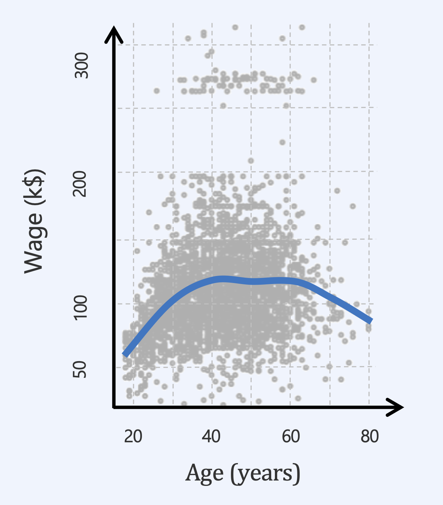
Trục dọc: Tiền lương (nghìn $)
Trục ngang: Tuổi (năm)
Biểu đồ phân tán
Đường màu xanh: trung bình làm trơn
Ứng dụng của học máy
Dữ liệu tiền lương
- Đầu ra liên tục → bài toán hồi quy
- Dữ liệu: 3000 bản ghi tiền lương của nam giới tại Mỹ
- Mục tiêu: hiểu mối liên hệ giữa tuổi, trình độ học vấn, năm và tiền lương
Nhận xét
- Tiền lương tăng theo tuổi trước 60, và giảm theo tuổi sau 60
- Tiền lương tăng nhẹ theo thời gian (~$10,000 trong 6 năm)
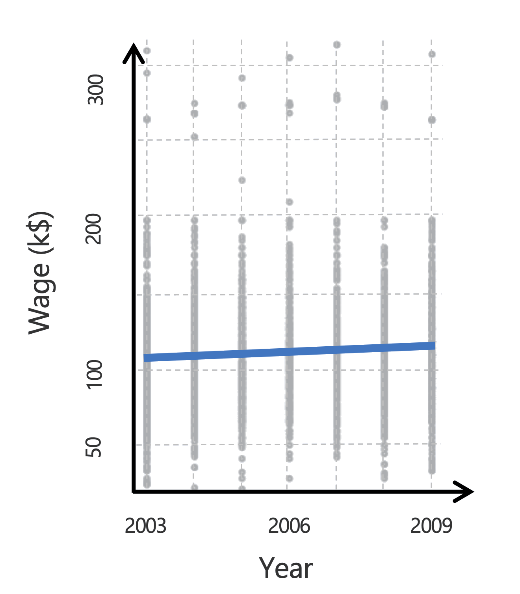
Trục dọc: Tiền lương (nghìn $)
Trục ngang: Năm
Biểu đồ phân tán
Đường màu xanh: hồi quy tuyến tính
Ứng dụng của học máy
Dữ liệu tiền lương
- Đầu ra liên tục → bài toán hồi quy
- Dữ liệu: 3000 bản ghi tiền lương của nam giới tại Mỹ
- Mục tiêu: hiểu mối liên hệ giữa tuổi, trình độ học vấn, năm và tiền lương
Nhận xét
- Tiền lương tăng theo tuổi trước 60, và giảm theo tuổi sau 60
- Tiền lương tăng nhẹ theo thời gian (~$10,000 trong 6 năm)
- Tiền lương tăng theo trình độ học vấn
Có thể dự đoán tiền lương tốt nhất khi dùng đồng thời 3 đặc trưng
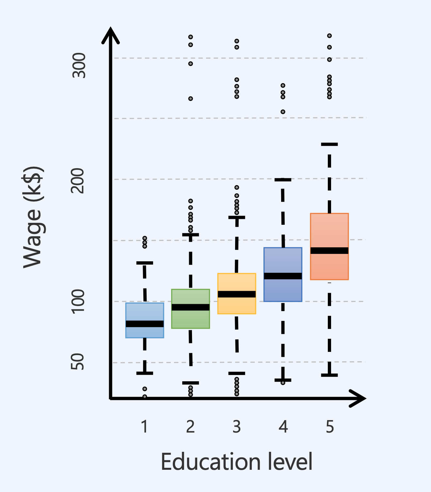
Trục dọc: Tiền lương (nghìn $)
Trục ngang: Mức học vấn
Biểu đồ hộp
Hộp: 25–75% · Râu: 5–95%
Ứng dụng của học máy
Dữ liệu thị trường chứng khoán
- Đầu ra rời rạc → bài toán phân loại
- Dữ liệu: 1250 quan sát xu hướng thị trường (2001–2005)
- Mục tiêu: dự đoán thị trường tăng hay giảm
Nhận xét
- Thị trường tăng 648 ngày, giảm 602 ngày
- Dựa vào dữ liệu hôm qua: không dự đoán được…
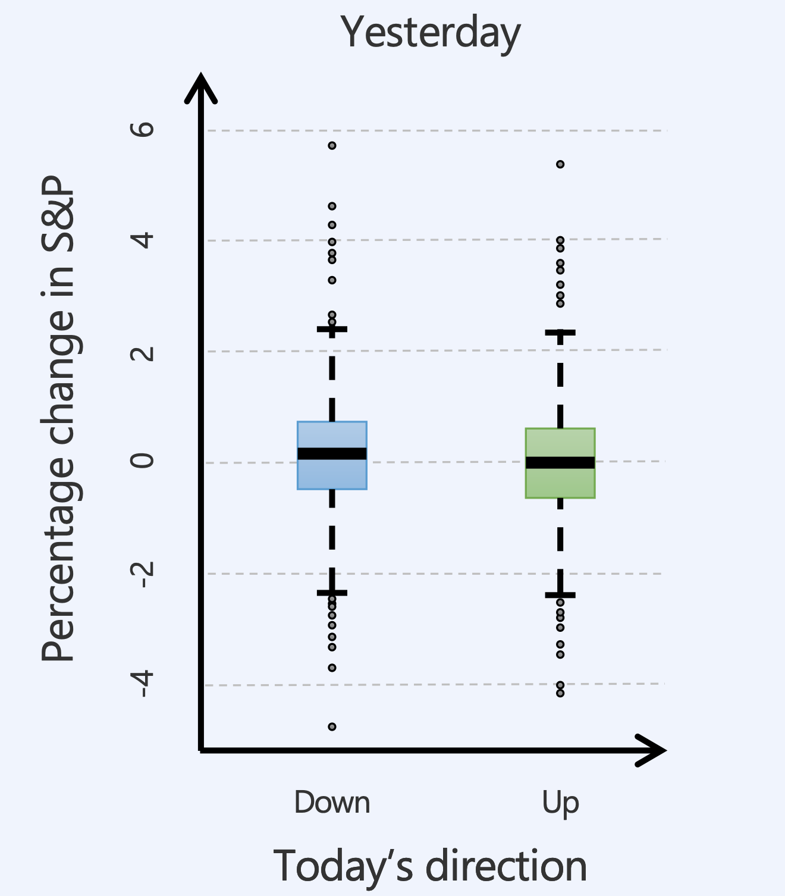
Trục dọc: % thay đổi của chỉ số S&P
Trục ngang: Hướng đi hôm nay (Down/Up)
Biểu đồ hộp
So sánh phân bố “Yesterday” giữa 2 lớp
Ứng dụng của học máy
Dữ liệu thị trường chứng khoán
- Đầu ra rời rạc → bài toán phân loại
- Dữ liệu: 1250 quan sát xu hướng thị trường (2001–2005)
- Mục tiêu: dự đoán thị trường tăng hay giảm
Nhận xét
- Thị trường tăng 648 ngày, giảm 602 ngày
- Dựa vào dữ liệu hôm qua hoặc 2 ngày trước: không dự đoán được…
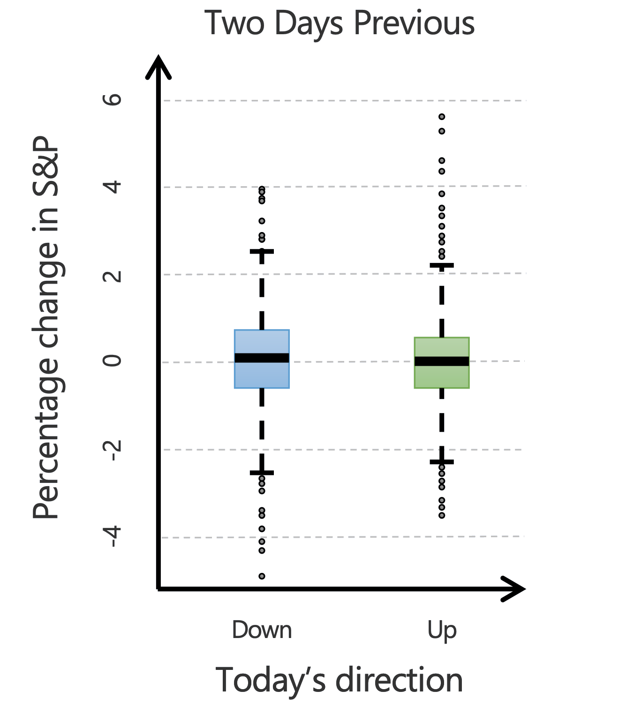
Trục dọc: % thay đổi của chỉ số S&P
Trục ngang: Hướng đi hôm nay (Down/Up)
Biểu đồ hộp
So sánh “2 ngày trước” giữa 2 lớp
Ứng dụng của học máy
Dữ liệu thị trường chứng khoán
- Đầu ra rời rạc → bài toán phân loại
- Dữ liệu: 1250 quan sát xu hướng thị trường (2001–2005)
- Mục tiêu: dự đoán thị trường tăng hay giảm
Nhận xét
- Thị trường tăng 648 ngày, giảm 602 ngày
- Dựa vào dữ liệu hôm qua, 2 ngày, hay 3 ngày trước → tín hiệu rất yếu…
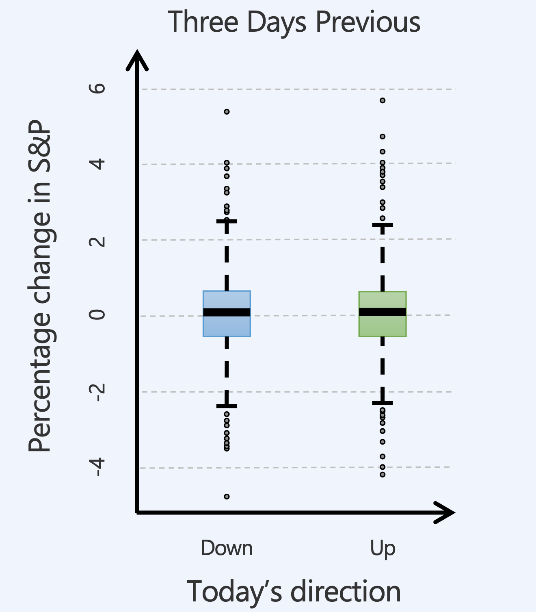
Trục dọc: % thay đổi của chỉ số S&P
Trục ngang: Hướng đi hôm nay (Down/Up)
Biểu đồ hộp
So sánh “3 ngày trước” giữa 2 lớp
Ứng dụng của học máy
Dữ liệu thị trường chứng khoán
- Đầu ra rời rạc → bài toán phân loại
- Dữ liệu: 1250 quan sát xu hướng thị trường (2001–2005)
- Mục tiêu: dự đoán thị trường tăng hay giảm
Nhận xét
- Tín hiệu từ vài ngày gần nhất rất yếu → khó dự đoán bằng “mắt thường”
- Dùng phương pháp phức tạp hơn có thể phát hiện xu hướng yếu
Có thể đạt dự đoán chính xác khoảng 60% (!)
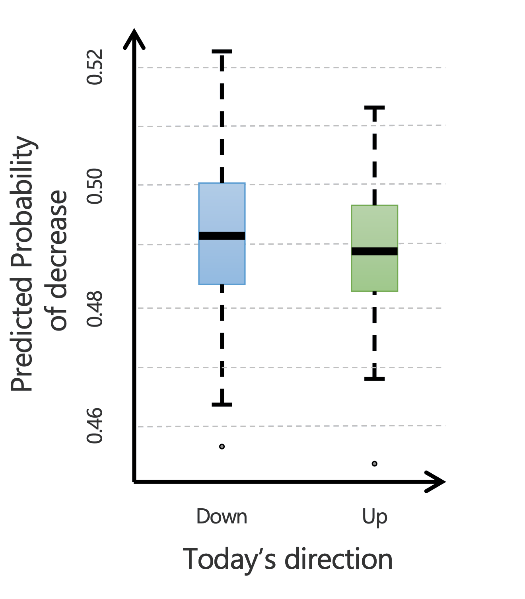
Trục dọc: Xác suất dự đoán giảm
Trục ngang: Hướng đi hôm nay (Down/Up)
Biểu đồ hộp
Mô hình: QDA (Quadratic Discriminant Analysis)
Ứng dụng của học máy
Dữ liệu biểu hiện gen
- Không có biến đầu ra → học không giám sát
- Dữ liệu: 64 dòng tế bào, 6830 biểu hiện gen mỗi dòng
- Mục tiêu: tìm các nhóm dòng tế bào có hồ sơ biểu hiện tương tự
Nhận xét
- Một cách tự nhiên, có thể nhóm thành 4 cụm
- Chọn số cụm phù hợp thường khó
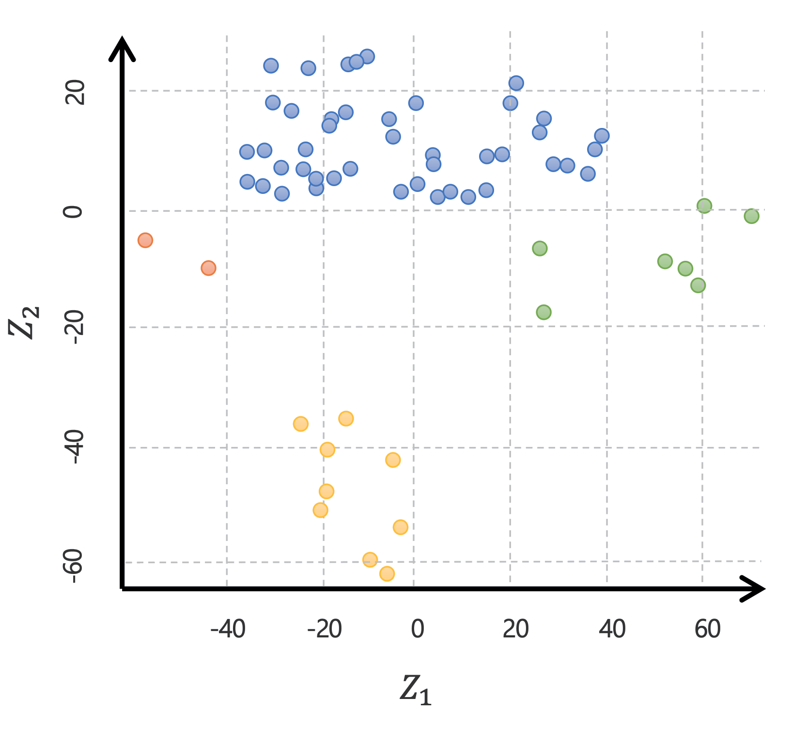
Hai trục chính đầu tiên: Z1, Z2
Màu sắc: nhóm (clusters)
Ứng dụng của học máy
Dữ liệu biểu hiện gen
- Không có biến đầu ra → học không giám sát
- Dữ liệu: 64 dòng tế bào, 6830 biểu hiện gen mỗi dòng
- Mục tiêu: tìm các nhóm dòng tế bào có hồ sơ biểu hiện tương tự
Nhận xét
- Một cách tự nhiên, có thể nhóm thành 4 cụm
- Chọn số cụm phù hợp thường khó
Học không giám sát hỗ trợ phân tích khám phá dữ liệu
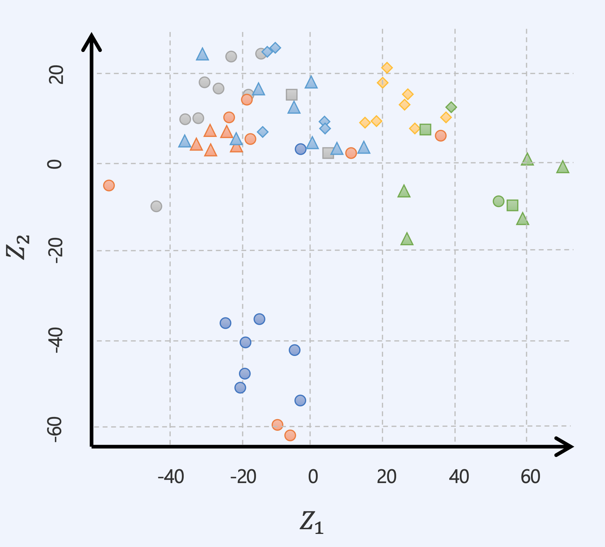
Hai trục chính đầu tiên: Z1, Z2
Hình dạng: loại ung thư · Màu sắc: nhóm
2.
Bài toán học
Khung bài toán chung
- Đầu vào \(X\): Đặc trưng (features/predictors).
- Đầu ra \(Y\): Dự đoán/nhãn (response/label).
- Mô hình hoá: Giả sử \(Y = f(X) + \varepsilon\).
- Trong đó: \(\varepsilon\) là nhiễu (noise) ngẫu nhiên không phụ thuộc vào \(X\) và có kỳ vọng \(\mathbb{E}[\varepsilon] = 0\).
- Mục tiêu: Học hàm \(\hat{f}\) từ dữ liệu \((x_i, y_i)\).
Ý nghĩa của nhiễu
- Do yếu tố chưa quan sát / đo đạc sai / ngẫu nhiên.
- Nhiễu luôn tồn tại → không thể có mô hình dự đoán hoàn hảo.
⚠️ Lưu ý: Ta giả sử nhiễu có kỳ vọng \(\mathbb{E}[\varepsilon] = 0\). Đọc thêm về Central Limit Theorem (Định lý giới hạn trung tâm) để hiểu hơn về giả thiết này.
Đặc trưng là gì?
- Biểu diễn dữ liệu thành các “tín hiệu” hữu ích cho mô hình.
- Ví dụ:
- Ảnh → pixel/embedding
- Văn bản → bag-of-words/embedding
- Thời gian → thống kê cửa sổ
Ví dụ
Quảng cáo → Doanh số
- \(X\): Ngân sách quảng cáo trên kênh Đài/Báo/TV.
- \(Y\): Doanh số bán hàng.
Câu hỏi: Kênh quảng cáo nào tác động mạnh? Dự đoán doanh số thế nào?
Ví dụ
Quảng cáo → Doanh số

Nhìn chung càng quảng cáo nhiều càng bán được nhiều hàng.
Đường màu xanh là kết quả của hồi quy tuyến tính với lỗi bình phương tối thiểu (least squares) cho từng biến.
Ví dụ
Thu nhập vs. Trình độ học vấn
- Mối quan hệ giữa thu nhập và số năm học là không tuyến tính
- Hình bên là ví dụ mô phỏng (được sinh ra từ một hàm số)
- Đường màu xanh: hàm thật (true functional relationship)
- Trong thực tế, hàm thật thường không biết trước → phải ước lượng
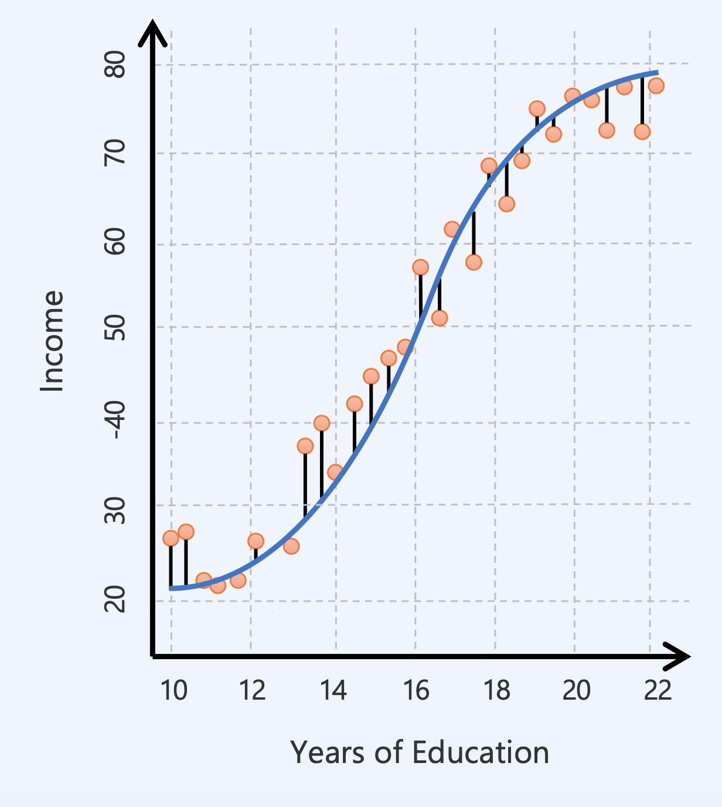
Trục dọc: Thu nhập
Trục ngang: Số năm học
Chấm: dữ liệu quan sát · Đường xanh: hàm thật
3.
Dự đoán
vs.
Diễn giải
Mục tiêu của học máy
Dự đoán chính xác nhất không đồng nghĩa với hiểu biết sâu sắc nhất về dữ liệu.
Hai mục tiêu chính:
- Dự đoán: Tối ưu độ chính xác của \(\hat{Y} = \hat{f}(X)\).
- Diễn giải: Hiểu quan hệ giữa \(X\) và \(Y\).
Dự đoán (prediction)
- Đầu ra: \(\hat{Y} = \hat{f}(X)\).
- Ưu tiên: độ chính xác trên dữ liệu chưa thấy (test/unseen data).
- Có thể chấp nhận mô hình như hộp đen (black box).
Sai số trong mô hình dự đoán
Kỳ vọng của sai số bình phương của \(\hat{Y}\) trên dữ liệu huấn luyện: \[ \mathbb{E}\!\left[(Y-\hat{Y})^{2}\right] \\ = \mathbb{E}\!\left[\bigl(f(X)+\varepsilon - \hat{f}(X)\bigr)^{2}\right] \\ = \underbrace{\mathbb{E}\!\left[\bigl(f(X)-\hat{f}(X)\bigr)^{2}\right]}_{\color{red}{\text{reducible error}}} + \underbrace{\mathrm{Var}(\varepsilon)}_{\color{red}{\text{irreducible error}}} \]
- Reducible error: giảm được bằng cách chọn mô hình tốt.
- Irreducible error: do \(\varepsilon\), không thể loại bỏ hoàn toàn.
Diễn giải (inference)
Mục tiêu của diễn giải:
- Biến nào quan trọng trong việc dự đoán?
- Quan hệ tuyến tính hay phi tuyến?
Ví dụ: Quảng cáo → Doanh thu
- Các kênh quảng cáo ảnh hưởng thế nào đến doanh thu? Kênh nào ảnh hưởng mạnh nhất?
- Quan hệ giữa ngân sách và doanh thu là tuyến tính hay phi tuyến?
Prediction vs. Inference
Luôn có sự đánh đổi giữa độ chính xác và khả năng diễn giải.
- Mô hình càng phức tạp → độ chính xác càng cao, khả năng diễn giải càng thấp.
- Mô hình càng đơn giản → khả năng diễn giải càng cao, độ chính xác càng thấp.
⭐️ Thực tế: Cả hai mục tiêu đều quan trọng, tuỳ theo ứng dụng.
4.
Chọn mô hình
Bài toán
- Ta có một tập dữ liệu huấn luyện gồm n cặp đã quan sát được \((x_1, y_1), (x_2, y_2), \ldots, (x_n, y_n)\)
- Mục tiêu: Tìm hàm \(\hat{f}\) sao cho với mọi cặp \((X, Y)\) ta có \(Y \approx \hat{f}(X)\)

Màu xanh dương: Hàm thực \(f\)
Hai loại mô hình chính
- Parametric: giả định dạng hàm, học tham số.
- Nonparametric: ít giả định, linh hoạt hơn.
Hai loại mô hình này có đặc điểm khác biệt về độ linh hoạt (flexibility) và khả năng diễn giải (interpretability).
Mô hình có tham số
Parametric Models
- Giả sử hàm có dạng \(f\), đơn giản nhất là hàm tuyến tính:
\(f(X) = \beta_0 + \beta_1 X_1 + \beta_2 X_2 + \ldots + \beta_p X_p\) - Học mô hình = Ước lượng các tham số \(\beta_0, \beta_1, \ldots, \beta_p\) từ dữ liệu \((x_1, y_1), (x_2, y_2), \ldots, (x_n, y_n)\)

Mô hình có tham số
Parametric Models
Đặc điểm:
- Ưu điểm: đơn giản, nhanh, tính diễn giải cao
- Rủi ro: kém linh hoạt (dễ underfit), giả định sai
Mô hình Phi tham số
Nonparametric Models
- Không giả định dạng hàm cho \(f\)
- Học dạng thực sự của \(f\)
- Cần nhiều tham số hơn → khó hơn
Màu xanh dương: Hàm thực \(f\)
Mô hình Phi tham số
Nonparametric Models
- Không giả định dạng hàm cho \(f\)
- Học dạng thực sự của \(f\)
- Cần nhiều tham số hơn → khó hơn

Mô hình Phi tham số
Nonparametric Models
Đặc điểm:
- Ưu điểm: Mô tả được quan hệ phức tạp
- Rủi ro: Cần nhiều dữ liệu, dễ overfit
Độ chính xác vs. Khả năng diễn giải

Độ chính xác vs. Khả năng diễn giải
Vì sao có khi ta cần mô hình đơn giản thay vì mô hình linh hoạt?
Mô hình linh hoạt thường có nhiều tham số:- Ước lượng nhiều tham số → tính toán tốn kém hơn.
- Mô hình phức tạp → khó giải thích.
- Dữ liệu ít → ước lượng kém tin cậy → dễ bị overfitting.
5.
Các kiểu học
Tổng quan
Các kiểu học máy chính:
- Học có giám sát (supervised learning): Dữ liệu có nhãn.
- Học không giám sát (unsupervised learning): Dữ liệu không nhãn.
- Học bán giám sát (semi-supervised learning): Một phần dữ liệu có nhãn.
- Học tăng cường (reinforcement learning).
Học có giám sát
Supervised learning
- Dữ liệu có nhãn: cặp \((x_i, y_i)\).
- Mục tiêu: học hàm \(f\) để dự đoán \(Y\) từ \(X\).
- Hai dạng chính: phân lớp (classification) & hồi quy (regression).
- Ví dụ: phân loại thư rác (phân lớp), quảng cáo → doanh thu (hồi quy).
Phân lớp vs. Hồi quy
- Phân lớp: \(Y\) rời rạc (0/1, nhiều hơn 2 lớp).
- Hồi quy: \(Y\) liên tục.
- Độ đo đánh giá khác nhau: accuracy/F1 vs. MSE/MAE.
Học không giám sát
- Dữ liệu không nhãn: chỉ có \(x_i\).
- Mục tiêu: tìm cấu trúc, mẫu (patterns) trong dữ liệu.
- Ví dụ: phân cụm (clustering), giảm chiều (dimension reduction).
Ví dụ: Phân cụm
- Mục tiêu: Nhóm dữ liệu theo độ tương đồng.
- Thách thức chính: Các cụm chồng lấn, cách chọn số cụm.
Ví dụ: Phân cụm
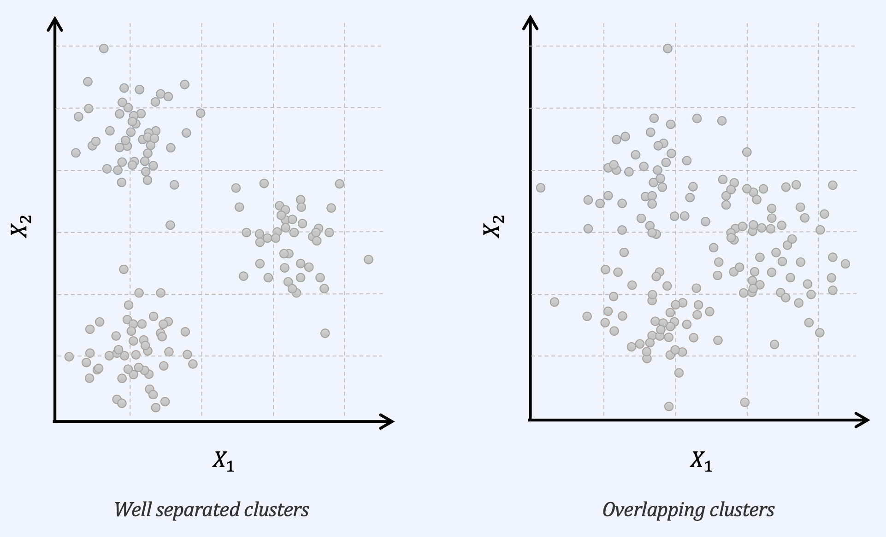
Ví dụ: Phân cụm
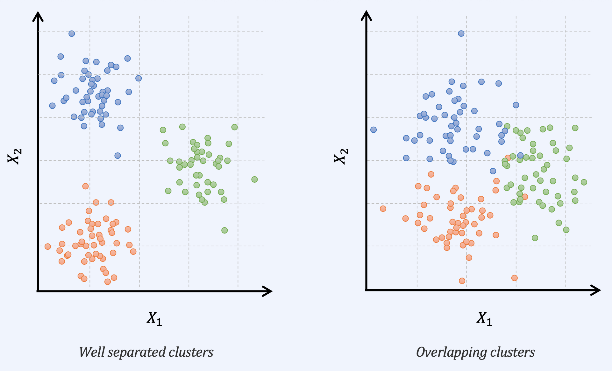
Học bán giám sát
Semi-supervised learning
- Dữ liệu \(x_i\) với \(i = 1, \ldots, n\), trong đó chỉ một phần có nhãn \(y_i\).
- Mục tiêu: Tận dụng dữ liệu không nhãn để cải thiện mô hình.
- Ứng dụng: khi nhãn khó/đắt để thu thập.
Học tăng cường
Reinforcement learning
- Tác tử (agent) tương tác với môi trường (environment).
- Mục tiêu: Học chiến lược (policy) để tối đa hoá phần thưởng (reward).
- Ứng dụng: chơi game, điều khiển robot.
Các kỹ thuật thường dùng
- Học đa nhiệm vụ (multi-task learning)
- Học chủ động (active learning)
- Học trực tuyến (online learning)
- Học chuyển đổi (transfer learning)
- Học kết hợp (ensemble learning)
⭐️ Đọc thêm tại Mục 1.4.5 trong Giáo trình "Học máy thống kê".
6.
Đánh giá mô hình học máy
Mục tiêu đánh giá
- Hiệu năng quan trọng nhất là ở trên dữ liệu chưa thấy.
- Không đánh giá mô hình bằng dữ liệu đã dùng để huấn luyện.
- Cần tách tập huấn luyện (training) / kiểm thử (test) (và có thể tập xác thực (validation)).
Đánh giá mô hình hồi quy
Thường sử dụng Lỗi Bình phương Trung bình (Mean Squared Error - MSE).
- Trên dữ liệu huấn luyện (MSE = training error): \[ \text{MSE} = \frac{1}{n} \sum_{i=1}^n (y_i - \hat{f}(x_i))^2 \]
- Ta quan tâm chủ yếu đến MSE trên dữ liệu kiểm thử (test data), hay dữ liệu chưa thấy (unseen data): \[ \text{Test MSE} = \text{avg}(y_0 - \hat{f}(x_0))^2 \]
Ví dụ
Dữ liệu gần tuyến tính

Ví dụ
Dữ liệu tương đối phi tuyến

Ví dụ
Dữ liệu rất phi tuyến

Đánh giá mô hình Phân loại
- Đánh giá chất lượng bộ phân loại bằng hàm mất mát (loss function).
- Thường dùng misclassification error (tỷ lệ phân loại sai).
- Gọi \(I(\cdot)\) là hàm chỉ thị: \(I(p)=1\) nếu \(p\) đúng, và \(I(p)=0\) nếu sai.
- Lỗi huấn luyện trên \(n\) mẫu: \[ \frac{1}{n}\sum_{i=1}^{n} I\!\left(y_i \neq \hat{y}_i\right) \]
- Lỗi kiểm tra (kỳ vọng trên dữ liệu kiểm thử/chưa thấy): \[ \mathrm{avg}\!\left(I\!\left(y_0 \neq \hat{y}_0\right)\right) \]
Bộ phân loại Bayes
Ta có thể cực tiểu hoá lỗi kiểm thử (test error) bằng bộ phân loại rất đơn giản:
\[ \arg\max_{j=1,\ldots,k}\Pr\!\left(Y=j \mid X=x_0\right) \]cho bài toán phân loại với \(k\) lớp \((1,\ldots,k)\).
- Bộ phân loại này gọi là bộ phân loại Bayes.
- Tính được khi biết phân phối xác suất thật (ví dụ: dữ liệu mô phỏng).
- Với dữ liệu thực, ta chỉ có thể ước lượng gần đúng.
Ví dụ
Phân loại nhị phân
- Dữ liệu: 100 quan sát thuộc 2 nhóm
- Biên quyết định Bayes: các điểm mà \[ \Pr(Y=1\mid X=x_0)=0.5 \] (vẽ bằng đường nét đứt)
- Tỷ lệ lỗi Bayes (sai số không thể giảm, irreducible error): \[ 1-\mathbb{E}\!\left(\max_{j=1,2}\Pr(Y=j\mid X)\right) \]
- Trong ví dụ này: Bayes error rate = 0.1304
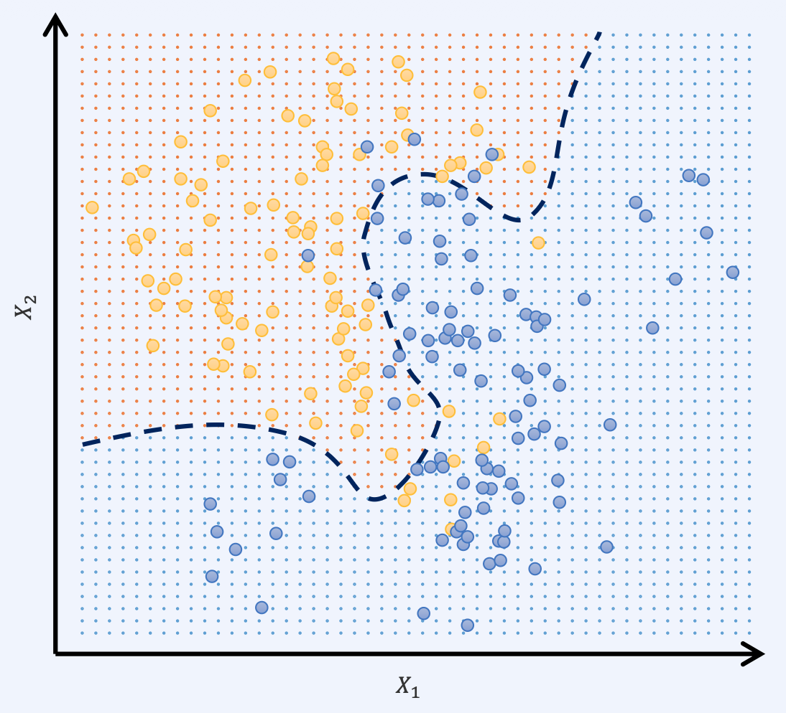
Trục: \(X_1\), \(X_2\) · Màu nền: vùng dự đoán · Nét đứt: biên Bayes
Ví dụ
k-láng giềng gần nhất (kNN)
- Gán nhãn cho điểm \(x_0\) theo đa số trong \(k\) láng giềng gần nhất.
- Công thức (bỏ phiếu đa số):
với \(\mathcal{N}_0\) là tập \(k\) điểm dữ liệu gần \(x_0\) nhất.
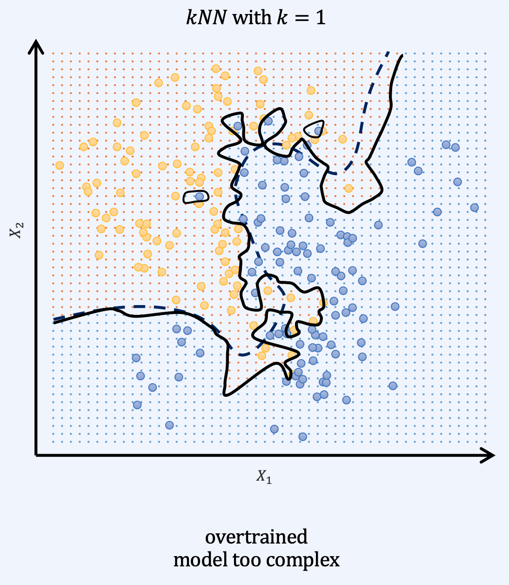
kNN với k = 1 · biên quyết định rất ngoằn ngoèo → overfitting (mô hình quá phức tạp)
Ví dụ
Số lượng láng giềng ảnh hưởng thế nào?
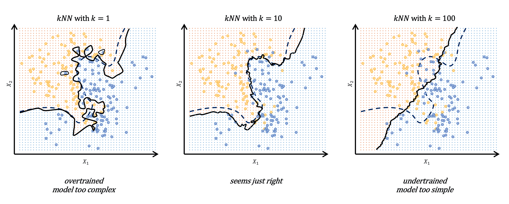
Ví dụ
Số lượng láng giềng ảnh hưởng thế nào?

7.
Đánh đổi
Bias–Variance
Đánh đổi Bias–Variance
Đường cong của test error đến từ một đánh đổi cơ bản trong MSE:
\[ \mathbb{E}\!\left( y_0-\hat{f}(x_0)\right)^2 = \mathrm{Var}\!\left(\hat{f}(x_0)\right) + \left[\mathrm{Bias}\!\left(\hat{f}(x_0)\right)\right]^2 + \mathrm{Var}(\varepsilon) \]\(\mathbb{E}\): kỳ vọng trên mọi tập huấn luyện có thể
- Bias (độ chệch): Sai lệch có hệ thống so với giá trị thật. \[ \mathrm{Bias}\!\left(\hat{f}(x_0)\right) = \mathbb{E}\!\left(\hat{f}(x_0)\right) - y_0 \]
- Variance (độ biến thiên): Mức độ mô hình thay đổi giữa các tập huấn luyện khác nhau. \[ \mathrm{Var}\!\left(\hat{f}(x_0)\right) = \mathbb{E}\!\left(\hat{f}(x_0)-\mathbb{E}\!\left(\hat{f}(x_0)\right)\right)^2 \]
Phân rã Bias-Variance

8.
Phát triển và triển khai mô hình học máy

9.
Khi nào dùng
học máy?
Nên dùng khi…
- Không thể viết luật đầy đủ (bài toán phức tạp).
- Môi trường thay đổi (cần thích nghi).
- Bài toán cần “nhận thức”: ảnh, giọng nói, ngôn ngữ.
- Có đủ dữ liệu để học.
Không nên dùng khi…
- Nếu luật đơn giản & ổn định → phương pháp dựa trên luật (rule-based) có thể tốt hơn.
- Nếu dữ liệu ít/khó tin cậy → học máy dễ sai.
- Nếu cần giải thích chặt chẽ → ưu tiên mô hình dễ diễn giải.
Chi phí cần cân nhắc
- Dữ liệu: thu thập, làm sạch, gán nhãn.
- Huấn luyện: thời gian, hạ tầng, thử nghiệm.
- Vận hành: triển khai, giám sát, cập nhật.
Tổng kết
- Học máy: Tối ưu \(P\) cho \(T\) trên dữ liệu \(E\).
- Bài toán học: \(Y = f(X) + \varepsilon\) với nhiễu \(\varepsilon\).
- Prediction vs Inference → chọn mô hình khác nhau.
- Đánh giá đúng: train/test, tránh overfitting.
- Hiểu bias–variance để ra quyết định mô hình.
- Phân biệt supervised/unsupervised/semi-supervised/RL.